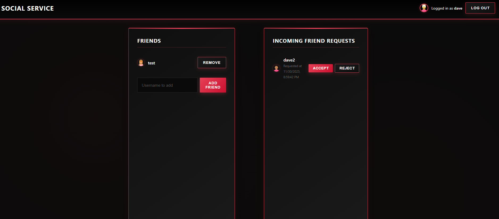

<!-- Social Networking Application Screenshots -->
<div class="project-screenshots">
  <h4>Application Screenshots</h4>

  <figure>
    
    <figcaption>
      Friends Dashboard — Manage connections,
      send requests, and accept or reject invitations.
    </figcaption>
  </figure>

  <figure>
    
    <figcaption>
      Authentication Interface — User login
      and account registration.
    </figcaption>
  </figure>
</div>
